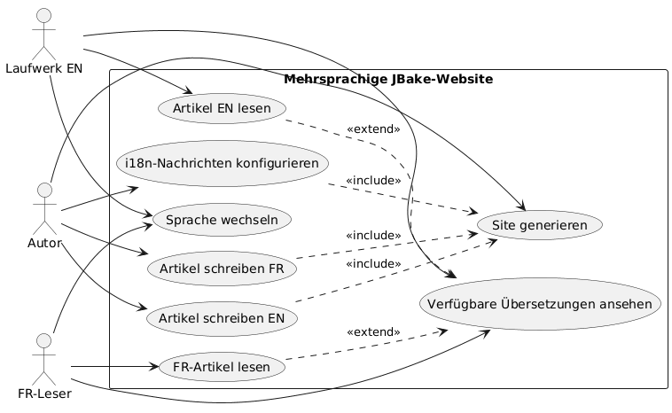
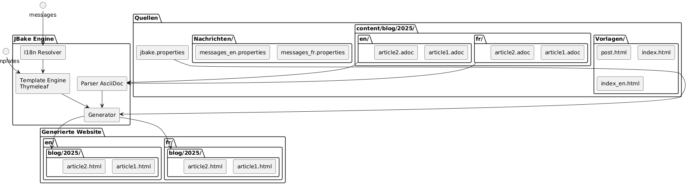
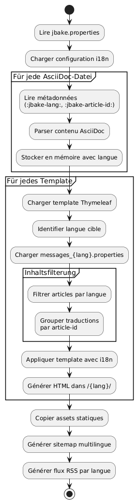

Internationalisierung einer statischen JBake-Website mit Thymeleaf
Publié le 20 October 2025
Einleitung
Die Internationalisierung (i18n) einer statischen Seite kann zunächst komplex erscheinen, doch JBake in Kombination mit Thymeleaf bietet elegante Lösungen für die Erstellung einer mehrsprachigen Website. In diesem Artikel zeige ich dir, wie ich die i18n auf meinem Blog implementiert habe, dabei sowohl das Templating als auch die Verwaltung von Artikeln in mehreren Sprachen abgedeckt habe.
Use-Case-Diagramm (Use Case)

Architektur der Internationalisierung
Unser Ansatz beruht auf zwei Säulen:
-
Die i18n des Templatings: Verwendung der Thymeleaf-Nachrichtendateien für UI-Elemente
-
Die i18n des InhaltsOrganisation der Artikel nach Sprache in einer dedizierten Ordnerstruktur
Strukturdiagramm (Dateiorganisation)

Warum dieser Ansatz?
Diese Trennung ermöglicht:
-
Eine Konsistenz in der Benutzeroberfläche unabhängig von der Sprache aufrechterhalten
-
Den Inhalt und die Artikelübersetzungen unabhängig verwalten
-
Erleichtern das Hinzufügen neuer Sprachen ohne umfangreiches Refactoring
-
Ermögliche Artikel, die nur in bestimmten Sprachen verfügbar sind.
Komponentendiagramm

I18n des Templatings mit Thymeleaf
Struktur der Nachrichtendateien
Der erste Schritt besteht darin, die Eigenschaftendateien für jede unterstützte Sprache zu erstellen :
src/jbake/templates/
├── messages.properties # Fallback par défaut
├── messages_fr.properties # Français
├── messages_en.properties # Anglais
└── messages_de.properties # AllemandInhalt der Nachrichtendateien
Hier ist ein Beispiel einer Datei`messages_fr.properties`:
# Navigation
nav.home=Accueil
nav.blog=Blog
nav.about=À propos
nav.contact=Contact
# Articles
article.readmore=Lire la suite
article.published=Publié le
article.tags=Étiquettes
article.also.available=Également disponible en
# Interface
site.title=Mon Blog Technique
site.description=Partage de connaissances et expériences
footer.copyright=© 2025 Tous droits réservés
search.placeholder=Rechercher un article...und sein englisches Äquivalent`messages_en.properties`:
# Navigation
nav.home=Home
nav.blog=Blog
nav.about=About
nav.contact=Contact
# Articles
article.readmore=Read more
article.published=Published on
article.tags=Tags
article.also.available=Also available in
# Interface
site.title=My Tech Blog
site.description=Sharing knowledge and experiences
footer.copyright=© 2025 All rights reserved
search.placeholder=Search articles...Verwendung in den Vorlagen
In Ihren Thymeleaf-Vorlagen, verwenden Sie die Syntax`#{}`um auf die Nachrichten zuzugreifen :
<!DOCTYPE html>
<html xmlns:th="http://www.thymeleaf.org">
<head>
<title th:text="#{site.title}">Mon Blog</title>
<meta name="description" th:content="#{site.description}" />
</head>
<body>
<nav>
<a th:href="@{/}" th:text="#{nav.home}">Accueil</a>
<a th:href="@{/blog/}" th:text="#{nav.blog}">Blog</a>
<a th:href="@{/about.html}" th:text="#{nav.about}">À propos</a>
</nav>
<footer>
<p th:text="#{footer.copyright}">Copyright</p>
</footer>
</body>
</html>Sequenzdiagramm - i18n-Auflösung
Failed to generate image: PlantUML preprocessing failed: [From <input> (line 4) ]
@startuml
actor Auteur
participant JBake
participant "AsciiDoc
^^^^^
Syntax Error? (Assumed diagram type: sequence)
@startuml
actor Auteur
participant JBake
participant "AsciiDoc
Parser" as parser
participant "Thymeleaf
Motor" as thymeleaf
participant "I18n\nResolver" as i18n
database "Nachrichten_*.properties" as messages
Auteur -> JBake: jbake -b
activate JBake
JBake -> parser: Lire article.fr.adoc
activate parser
parser --> JBake: Contenu + métadonnées\n(lang=fr, article-id=xyz)
deactivate parser
JBake -> parser: Lire article.en.adoc
activate parser
parser --> JBake: Contenu + métadonnées\n(lang=en, article-id=xyz)
deactivate parser
JBake -> thymeleaf: Générer page FR
activate thymeleaf
thymeleaf -> i18n: Résoudre #{nav.home}
activate i18n
i18n -> messages: Lire messages_fr.properties
messages --> i18n: "Startseite"
i18n --> thymeleaf: "Startseite"
deactivate i18n
thymeleaf -> JBake: Rechercher traductions\n(article-id=xyz, lang!=fr)
JBake --> thymeleaf: article.en.html trouvé
thymeleaf --> JBake: /fr/blog/article.html
deactivate thymeleaf
JBake -> thymeleaf: Générer page EN
activate thymeleaf
thymeleaf -> i18n: Résoudre #{nav.home}
activate i18n
i18n -> messages: Lire messages_en.properties
messages --> i18n: "Startseite"
i18n --> thymeleaf: "Startseite"
deactivate i18n
thymeleaf -> JBake: Rechercher traductions\n(article-id=xyz, lang!=en)
JBake --> thymeleaf: article.fr.html trouvé
thymeleaf --> JBake: /en/blog/article.html
deactivate thymeleaf
JBake --> Auteur: Site généré
deactivate JBake
@enduml
Konfiguration der Locale in JBake
In Ihrer Datei`jbake.properties`, legen Sie das Gebietsschema fest :
# Locale par défaut
thymeleaf.locale=fr
# Encodage
template.encoding=UTF-8I18n der Artikel: Organisation nach Ordner
Flussdiagramm (Flow) - Generierung

Ordnerstruktur
Anstatt Suffixe in den Dateinamen zu verwenden, habe ich mich für eine Organisation nach Ordnern entschieden, die mehr Klarheit und Wartbarkeit bietet:
content/blog/
├── 2024/
│ ├── fr/
│ │ ├── introduction-jbake.adoc
│ │ ├── guide-thymeleaf.adoc
│ │ └── astuces-asciidoc.adoc
│ └── en/
│ ├── introduction-jbake.adoc
│ ├── thymeleaf-guide.adoc
│ └── asciidoc-tips.adoc
└── 2025/
├── fr/
│ └── internationalisation-jbake.adoc
└── en/
└── jbake-internationalization.adocVorteile dieses Ansatzes
Diese Struktur bietet mehrere Vorteile:
-
klare Trennung: jede Sprache hat ihren eigenen Raum
-
flexible Benennung: Die Dateien können je nach Sprache unterschiedliche Namen haben.
-
Skalierbarkeit: einfach eine neue Sprache hinzuzufügen
-
Natürliche Organisation: folgt der zeitlichen Logik von JBake
Metadaten der Artikel
Jeder Artikel muss Metadaten enthalten, um die Verknüpfung zwischen Übersetzungen zu ermöglichen. Hier ist ein Beispiel:
Französische Version(2025/fr/internationalisation-jbake.adoc) :
= Internationalisation d'un site statique JBake
:jbake-type: post
:jbake-status: published
:jbake-date: 2025-10-20
:jbake-lang: fr
:jbake-article-id: jbake-i18n-thymeleaf
:jbake-tags: jbake, thymeleaf, i18n
:jbake-description: Guide pour mettre en place l'i18n avec JBakeEnglische Version (2025/en/jbake-internationalization.adoc) :
= Internationalizing a JBake Static Site
:jbake-type: post
:jbake-status: published
:jbake-date: 2025-10-20
:jbake-lang: en
:jbake-article-id: jbake-i18n-thymeleaf
:jbake-tags: jbake, thymeleaf, i18n
:jbake-description: Guide to implement i18n with JBakeHINWEIS: Das Attribut`:jbake-article-id:`es ist entscheidend: es ermöglicht, die verschiedenen Übersetzungen desselben Artikels zu verknüpfen.
Konfiguration der URLs
in`jbake.properties`, konfigurieren Sie das URL-Muster, um die Sprache einzuschließen:
# Pattern d'URL avec langue
post.permalink.pattern=:lang/blog/:year/:name.html
# Langue par défaut
site.default.lang=frDies erzeugt URLs des Typs:
-
/fr/blog/2025/internationalisation-jbake.html -
/en/blog/2025/jbake-internationalization.html
Vorlagen für die mehrsprachige Anzeige
Artikelvorlage mit Sprachauswähler
Erstellen Sie eine Vorlage`post.html`der die verfügbaren Übersetzungen anzeigt :
<!DOCTYPE html>
<html xmlns:th="http://www.thymeleaf.org">
<head>
<title th:text="${content.title}">Article</title>
</head>
<body>
<article>
<header>
<h1 th:text="${content.title}">Titre</h1>
<div class="article-meta">
<time th:text="${#dates.format(content.date, 'dd MMMM yyyy')}"
th:attr="datetime=${#dates.format(content.date, 'yyyy-MM-dd')}">
Date
</time>
<!-- Sélecteur de traductions -->
<div class="translations" th:if="${content['article-id']}">
<span th:text="#{article.also.available}">Aussi disponible en :</span>
<ul class="language-list">
<li th:each="post : ${published_posts}"
th:if="${post['article-id'] == content['article-id'] and post.lang != content.lang}">
<a th:href="${post.uri}"
th:text="${post.lang.toUpperCase()}">
LANG
</a>
</li>
</ul>
</div>
</div>
</header>
<div class="content" th:utext="${content.body}">
Contenu de l'article
</div>
<footer class="article-footer">
<div class="tags" th:if="${content.tags}">
<span th:text="#{article.tags}">Étiquettes :</span>
<span th:each="tag : ${content.tags}">
<a th:href="@{/tags/{tag}.html(tag=${tag})}"
th:text="${tag}">tag</a>
</span>
</div>
</footer>
</article>
</body>
</html>Nach Sprache gefilterter Index
Erstellen Sie Indexvorlagen für jede Sprache:
index.html(französischer Index) :
<!DOCTYPE html>
<html xmlns:th="http://www.thymeleaf.org">
<head>
<title th:text="#{site.title}">Mon Blog</title>
</head>
<body>
<main>
<h1 th:text="#{nav.blog}">Blog</h1>
<div class="articles-list">
<article th:each="post : ${published_posts}"
th:if="${post.lang == 'fr'}">
<h2>
<a th:href="${post.uri}" th:text="${post.title}">Titre</a>
</h2>
<time th:text="${#dates.format(post.date, 'dd MMMM yyyy')}">
Date
</time>
<p th:text="${post.description}">Description</p>
<a th:href="${post.uri}" th:text="#{article.readmore}">
Lire la suite
</a>
</article>
</div>
</main>
</body>
</html>index_en.html(englischer Index) :
<!DOCTYPE html>
<html xmlns:th="http://www.thymeleaf.org">
<head>
<title th:text="#{site.title}">My Blog</title>
</head>
<body>
<main>
<h1 th:text="#{nav.blog}">Blog</h1>
<div class="articles-list">
<article th:each="post : ${published_posts}"
th:if="${post.lang == 'en'}">
<h2>
<a th:href="${post.uri}" th:text="${post.title}">Title</a>
</h2>
<time th:text="${#dates.format(post.date, 'dd MMMM yyyy')}">
Date
</time>
<p th:text="${post.description}">Description</p>
<a th:href="${post.uri}" th:text="#{article.readmore}">
Read more
</a>
</article>
</div>
</main>
</body>
</html>Navigation zwischen Sprachen
Globale Sprachauswahl
Flussdiagramm - Benutzerlesen

Fügen Sie Ihrem Haupt-Template einen Sprachauswähler hinzu:
<nav class="language-switcher">
<a href="/index.html"
th:classappend="${content.lang == 'fr'} ? 'active'"
title="Français">
🇫🇷 FR
</a>
<a href="/en/index.html"
th:classappend="${content.lang == 'en'} ? 'active'"
title="English">
🇬🇧 EN
</a>
</nav>CSS-Stil für den Selektor
.language-switcher {
display: flex;
gap: 1rem;
padding: 0.5rem;
background: #f5f5f5;
border-radius: 4px;
}
.language-switcher a {
padding: 0.5rem 1rem;
text-decoration: none;
color: #333;
border-radius: 4px;
transition: background 0.2s;
}
.language-switcher a:hover {
background: #e0e0e0;
}
.language-switcher a.active {
background: #007bff;
color: white;
}
.translations {
margin: 1rem 0;
padding: 1rem;
background: #f8f9fa;
border-left: 4px solid #007bff;
}
.language-list {
display: inline-flex;
gap: 0.5rem;
list-style: none;
padding: 0;
margin: 0;
}
.language-list li::after {
content: "•";
margin-left: 0.5rem;
}
.language-list li:last-child::after {
content: "";
}RSS-Feed nach Sprache
Um getrennte RSS-Feeds nach Sprache zu haben, erstelle separate Vorlagen:
feed.xml(französischer Fluss) :
<?xml version="1.0" encoding="UTF-8"?>
<rss version="2.0" xmlns:th="http://www.thymeleaf.org">
<channel>
<title th:text="#{site.title}">Mon Blog</title>
<link th:text="${config.site_host}">http://example.com</link>
<description th:text="#{site.description}">Description</description>
<language>fr</language>
<item th:each="post : ${published_posts}"
th:if="${post.lang == 'fr'}">
<title th:text="${post.title}">Titre</title>
<link th:text="${config.site_host + post.uri}">Lien</link>
<pubDate th:text="${#dates.format(post.date, 'EEE, dd MMM yyyy HH:mm:ss Z')}">
Date
</pubDate>
<description th:text="${post.description}">Description</description>
</item>
</channel>
</rss>Gute Praktiken und Tipps
1. Konsistenz der Artikel-IDs
Stellen Sie sicher, dass`:jbake-article-id:`ist für alle Übersetzungen eines Artikels identisch. Verwenden Sie ein einheitliches Format:
-
Bevorzugen Sie englische Bezeichner für Universalität
-
Verwende Bindestriche, um die Wörter zu trennen
-
Vermeiden Sie Sonderzeichen
2. Konsistente Daten
Alle Übersetzungen eines Artikels müssen das gleiche Veröffentlichungsdatum haben (:jbake-date:). Dies erleichtert das Sortieren und die chronologische Anzeige.
3. Mehrsprachige Tags
Für die Tags, haben Sie zwei Optionen:
Option 1: Universelle Tags auf Englisch
:jbake-tags: java, spring-boot, microservicesOption 2 : Tags übersetzt mit Zuordnung
# Version française
:jbake-tags: java, spring-boot, microservices
# Version anglaise
:jbake-tags: java, spring-boot, microservices4. Verwaltung der nicht übersetzten Artikel
Es ist nicht verpflichtend, alle Artikel zu übersetzen. Wenn ein Artikel nur in einer Sprache existiert, erscheint er einfach nicht in den Auflistungen der anderen Sprache.
5. Mehrsprachige Sitemap
Generieren Sie einen Sitemap, der alle Sprachen umfasst:
<?xml version="1.0" encoding="UTF-8"?>
<urlset xmlns="http://www.sitemaps.org/schemas/sitemap/0.9"
xmlns:xhtml="http://www.w3.org/1999/xhtml"
xmlns:th="http://www.thymeleaf.org">
<url th:each="post : ${published_posts}">
<loc th:text="${config.site_host + post.uri}">URL</loc>
<lastmod th:text="${#dates.format(post.date, 'yyyy-MM-dd')}">Date</lastmod>
<!-- Liens alternatifs pour les traductions -->
<xhtml:link th:each="translation : ${published_posts}"
th:if="${translation['article-id'] == post['article-id'] and translation.lang != post.lang}"
rel="alternate"
th:attr="hreflang=${translation.lang},href=${config.site_host + translation.uri}" />
</url>
</urlset>Fazit
Die Internationalisierung einer JBake-Site mit Thymeleaf ist ein robuster und wartbarer Ansatz. Durch die Trennung von i18n im Templating (über die Message-Dateien) und i18n im Inhalt (durch die Ordnerorganisation) erhalten Sie ein flexibles System, das sich leicht weiterentwickeln lässt.
Die wichtigsten zu beachtenden Punkte:
-
Thymeleaf-Nachrichtendateienfür die Benutzeroberfläche
-
Ordnerbasierte Organisation(Jahr/Sprache) für die Artikel
-
Artikel-IDsum die Übersetzungen zu verlinken
-
dedizierte Vorlagenfür jede Sprache
-
Explizite URLsinklusive des Sprachcodes
Bereitstellungsdiagramm
Failed to generate image: PlantUML preprocessing failed: [From <input> (line 14) ]
@startuml
node "Entwicklungsmaschine" {
artifact "Quellen" {
folder "Inhalt/"
folder "templates/"
folder "assets/"
}
component "JBake CLI" as jbake
Sources --> jbake : jbake -b
}
node "Build-Server
^^^^^
Syntax Error? (Assumed diagram type: component)
@startuml
node "Entwicklungsmaschine" {
artifact "Quellen" {
folder "Inhalt/"
folder "templates/"
folder "assets/"
}
component "JBake CLI" as jbake
Sources --> jbake : jbake -b
}
node "Build-Server
(CI/CD)" {
component "GitHub Actions
oder GitLab CI" as ci
jbake --> ci : push
}
cloud "CDN / Hosting" {
node "Statischer Webserver" {
artifact "Generierte Seite" {
folder "/fr/blog/"
folder "/en/blog/"
folder "/assets/"
}
}
}
ci --> "Generierte Seite" : déploiement
actor "Leser" as users
users --> "Statischer Webserver" : HTTPS
@enduml
Diese Architektur ermöglicht es Ihnen, einfach mit zwei Sprachen zu beginnen und weitere hinzuzufügen, ohne ein großes Refactoring durchführen zu müssen. Alles bleibt vollständig statisch und leistungsfähig und bleibt der Philosophie von JBake treu.
Gute mehrsprachige Entwicklung! 🌍